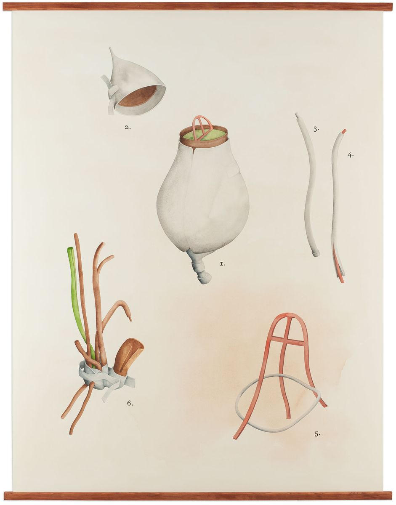
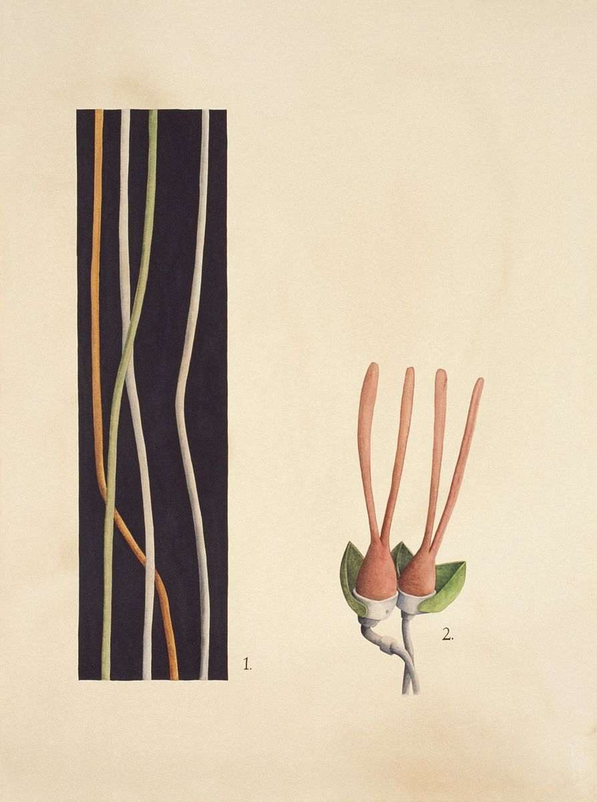
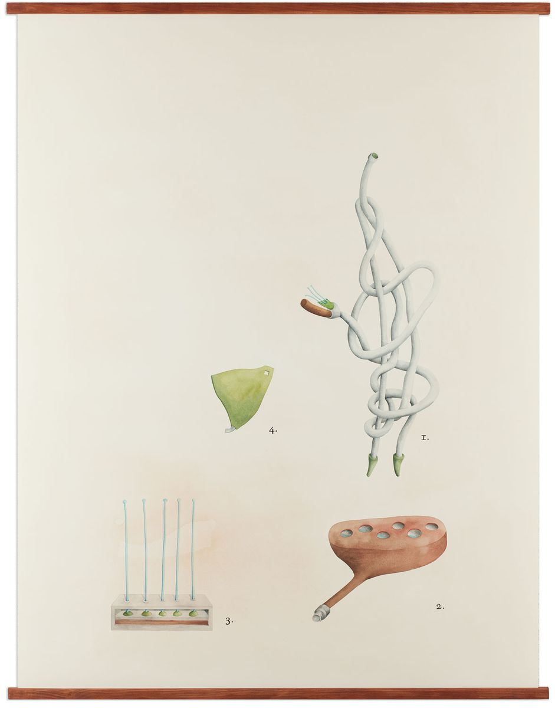
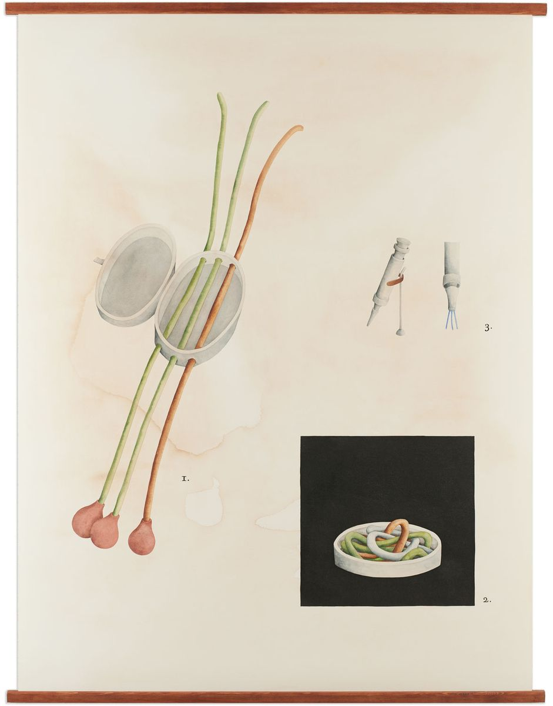
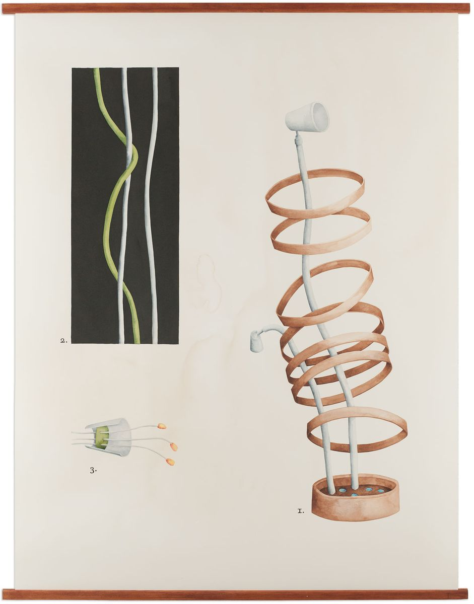
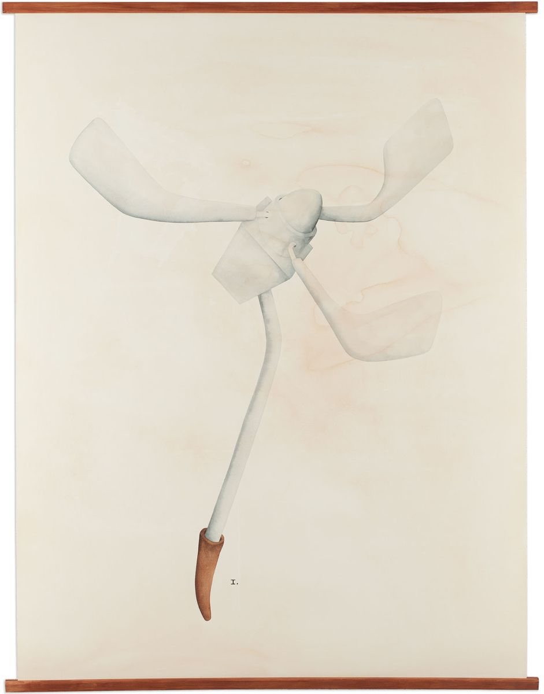
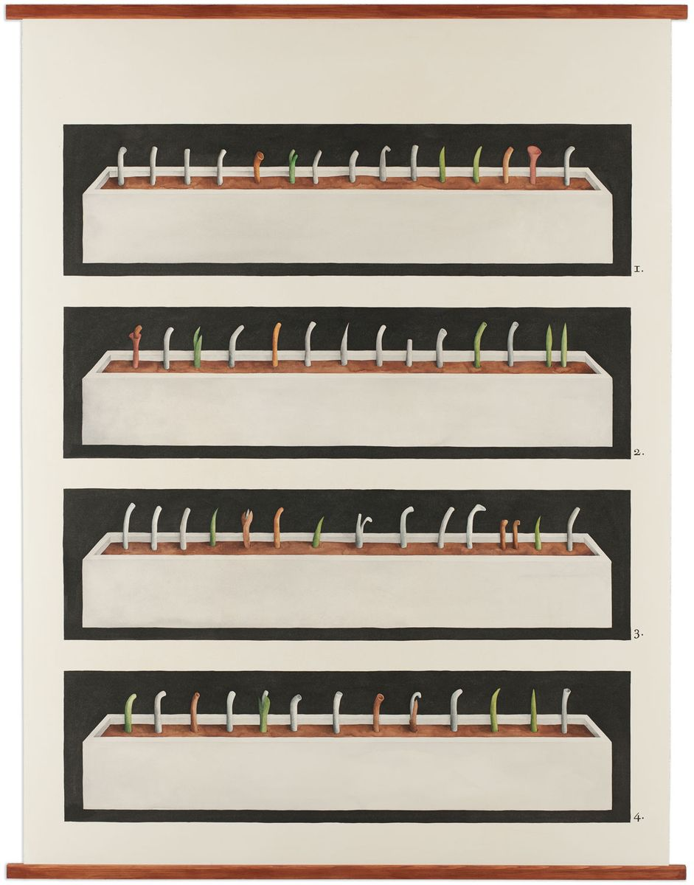
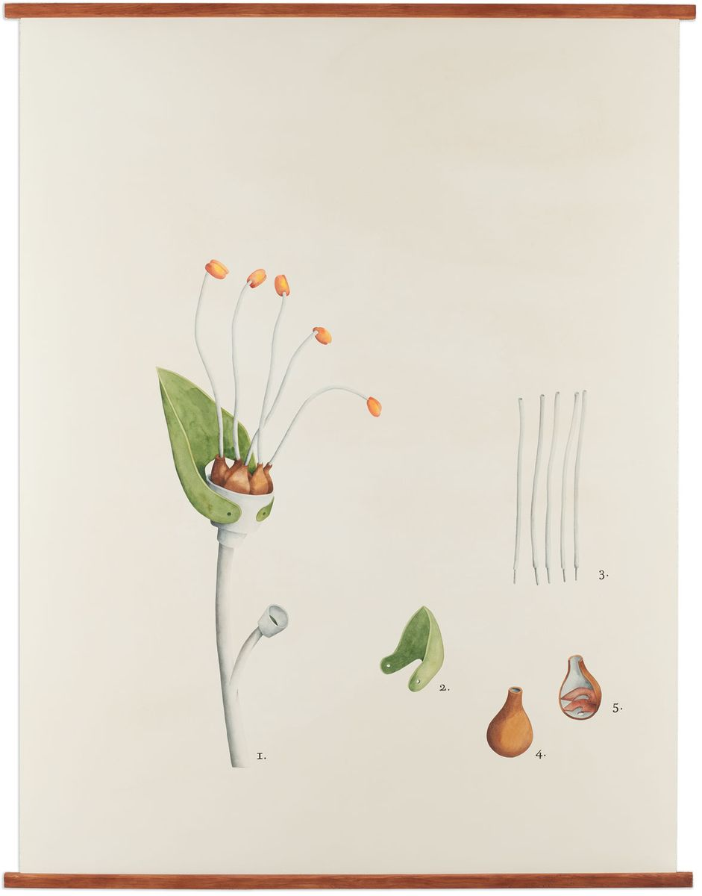
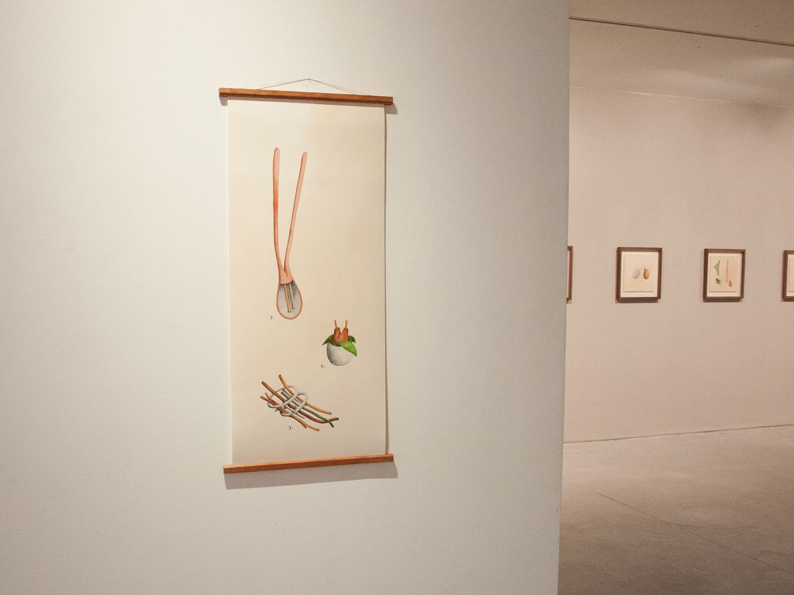
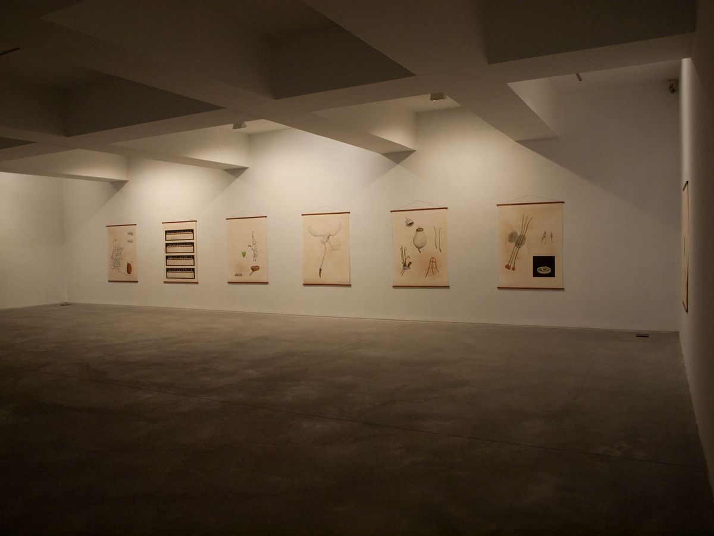

Systema Naturæ, drawings
Carlos Carvalho Arte Contemporânea, Lisbon, 2012
Making use of Latin epithets that describe characteristics of genera and species, I transform them, combining them with translated contemporary words, looking for composites that create new meanings. The results are either absurd, ironic, ambivalent, sometimes amusing, but always follow the rules of taxonomic nomenclature and of the use of Botanical Latin. My species are then grouped in families which are also newly named.









